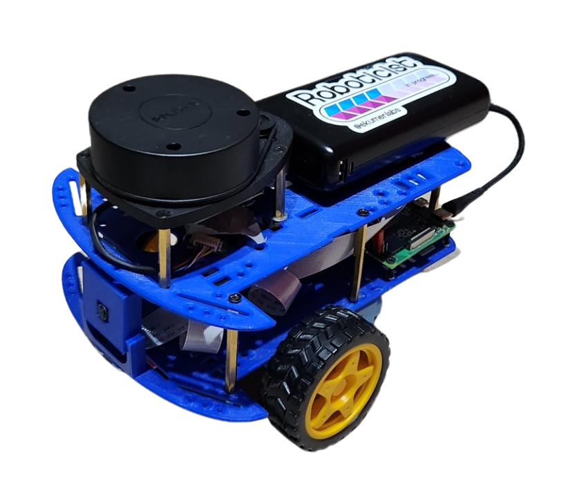

Andino
Andino is a fully open-source diff drive robot designed for educational purposes and low-cost applications. It is fully integrated with ROS 2 and it is a great base platform to improve skills over the robotics field. With its open-source design, anyone can modify and customize the robot to suit their specific needs.
Note: For videos go to Media section.
Building your Robot
Package Summary
Installation
Usage
Demos
Media
RVIZ Visualization
Slam
Using the robot for mapping.
See andino slam for more information.
Inspirational sources
This section is dedicated to recognizing and expressing gratitude to the open-source repositories that have served as a source of inspiration for this project. We highly recommend exploring these repositories for further inspiration and learning.
Contributing
Issues or PRs are always welcome! Please refer to CONTRIBUTING doc.
Code development
Note that a Docker folder is provided for easy setting up the workspace.